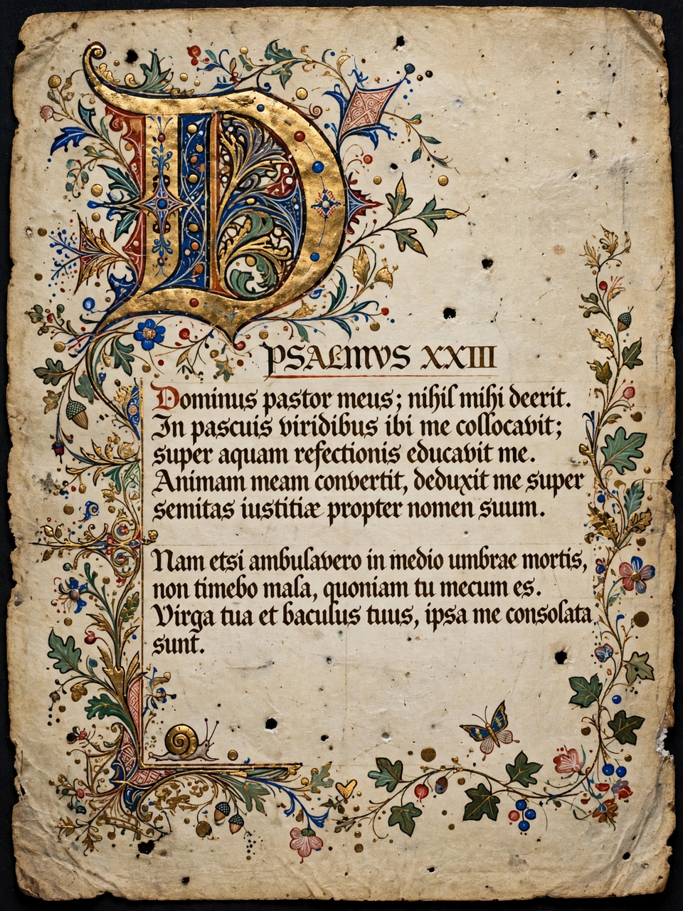

From Wikipedia, the free encyclopedia
| Full name | Biblia Vulgata |
|---|---|
| Language | Late Latin |
| Translator | Chiefly Jerome |
| Commissioned | 382 AD, by Pope Damasus I |
| Complete Bible published | Early 5th century |
| Derived from | Old Latin versions; Hebrew and Greek originals |
The Vulgate (from Latin editio vulgata, "commonly used edition") is a late-4th-century Latin translation of the Bible, largely the work of Saint Jerome. It became progressively the Catholic Church's officially promulgated Latin version of the Bible during the 16th century, and its influence on Western language, law and literature was immense.

A medieval manuscript of the Vulgate.
Before Jerome, the Latin-speaking church used many divergent Old Latin (Vetus Latina) translations. In 382 Pope Damasus I commissioned Jerome to produce a reliable, uniform Latin text. Jerome first revised the Gospels against the Greek, then, after settling in Bethlehem, translated the Old Testament afresh from the Hebrew — his commitment to the Hebraica veritas ("Hebrew truth") over the familiar Septuagint caused controversy, notably with Augustine. Parts of the standard Vulgate, including some books and revisions of the Psalms (Jerome made three versions; the Gallican Psalter prevailed), are not by Jerome himself.
The Vulgate displaced the Old Latin versions only gradually, achieving dominance by the early Middle Ages. Recensions were produced under Charlemagne by Alcuin and Theodulf. It was the Vulgate that Gutenberg chose for the first major European printed book (the Gutenberg Bible, c. 1455). In 1546 the Council of Trent declared the Vulgate authentic and authoritative for the Latin Church; the official Sixto-Clementine edition followed in 1592 after an abortive Sixtine edition of 1590.
Twentieth-century scholarship produced the critical Stuttgart Vulgate (Biblia Sacra iuxta Vulgatam Versionem), and in 1979 the Church promulgated the Nova Vulgata, a revision aligned with modern critical texts, as its typical Latin edition. Jerome's Latin shaped Christian vocabulary — words such as sacramentum, salvatio and regeneratio — and Vulgate phrases permeate European literature.